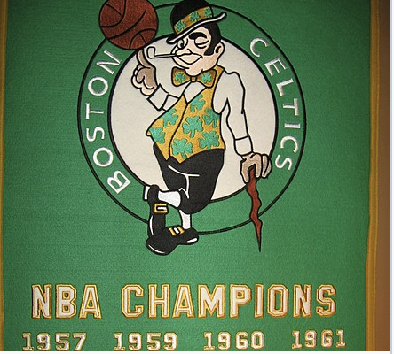
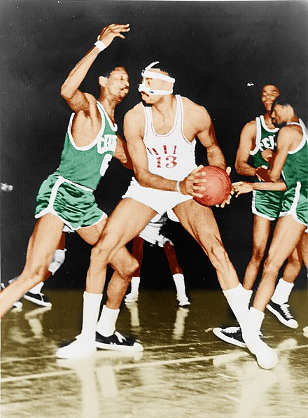

Histoire des Celtics Boston:
Les Celtics de Boston (Boston Celtics en anglais, « les Celtes de Boston ») est une franchise de basket-ball de la NBA basée à Boston dans l'État du Massachusetts aux États-Unis. Fondé le 6 juin 1946, le club évolue trois saisons dans la Basketball Association of America (BAA) qui devient en 1949 la National Basketball Association (NBA). Les Celtics de Boston sont la plus ancienne franchise de NBA, qui de plus n'a changé ni de nom, ni de localisation depuis sa création. Après des débuts difficiles, les Celtics de Boston connaissent une période faste de la fin des années 50 jusqu’à la fin des années 60 en remportant onze titres de champion national dont huit titres consécutifs, performance jamais réitérée dans un sport américain. Bob Cousy, Bill Russell ou Tom Heinsohn sont les principaux artisans de cette période ainsi que le légendaire et créatif entraineur Red Auerbach. Quelques années plus tard, Boston remporte deux nouveaux titres grâce à John Havlicek et Dave Cowens notamment. Le club connaît une deuxième période au sommet de la NBA avec Larry Bird puis descend dans les profondeurs des classements. Le titre de champion NBA obtenu lors de la saison NBA 2007-2008 après 22 ans d’attente montre le retour des Celtics au plus haut niveau. Ils n’arrivent cependant pas à confirmer avec un nouveau titre avec cette génération et il faut de nouveau attendre 16 ans avec leur dernier titre en 2024. Également finaliste lors des saisons 2009-2010 et 2021-2022, la franchise de basket-ball de Boston est actuellement entraînée par Joe Mazzulla. Durant la saison 2010-2011, les Celtics de Boston deviennent la première équipe de l'histoire de la NBA à avoir dans leurs rangs quatre joueurs ayant inscrit plus de 20 000 points (Kevin Garnett, Paul Pierce, Ray Allen et Shaquille O'Neal). Cinq joueurs des Celtics (Bob Cousy, Bill Russell 5 fois, Dave Cowens, Larry Bird 3 fois et Kevin Garnett) ont remporté le prix NBA Most Valuable Player (meilleur joueur de la saison) pour un total record de onze récompenses MVP2. Surnommés C's, les Celtics restent la franchise la plus titrée de la ligue avec 18 trophées. Ils entretiennent une grande rivalité avec les Lakers de Los Angeles (17 trophées) et se sont rencontrés douze fois en finale (les Celtics ayant gagné neuf fois contre trois aux Lakers), la dernière fois en 2010.


